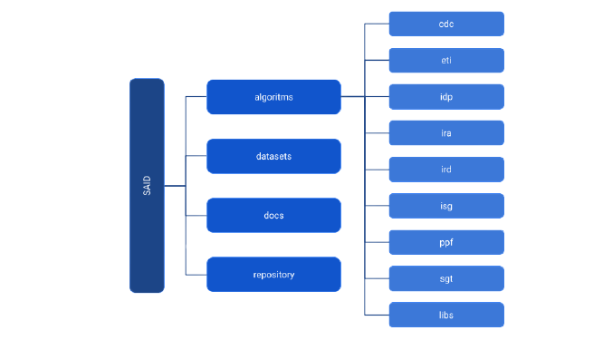

INTRODUÇÃO¶
O Projeto SAID (Sistema de Análise Inteligente de Dados) busca realizar serviços de análises de dados. O SAID foi implementado como uma aplicação flask em Python e utiliza em sua comunicação API Rest via JSON.
O projeto SAID possui a seguinte estrutura geral de pastas:
Dentro da pasta algorithms temos os principais algoritmos desenvolvidos. Cada um dos módulos desenvolvidos foram colocados em uma pasta distinta de forma a facilitar a compreensão. Os módulos desenvolvidos são: CDC, ETI, IDP, IRA, IRD, ISG, PPF e SGT.
A pasta datasets contém alguns arquivos utilizados no treinamento e avaliação dos modelos.
A pasta docs contém a documentação de todos os códigos desenvolvidos utilizando a biblioteca Sphinx 4.0.1.
A pasta repository contém alguns códigos auxiliares criados para manipulação de dados.